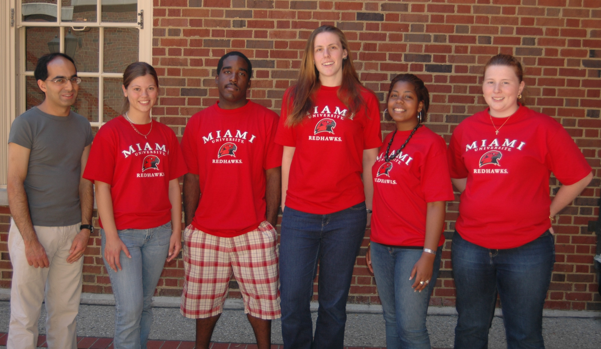

|
"Reckless or
Responsible: A Multivariate Statistical Analysis of Consumer Spending" by
|
Dr. Vasant Waikar, Shelly-Ann
Meade, Emilola Abayomi, Shannon Grant,
Amber Shoemaker, Erin Esp, Anthony Franklin and Ashley Brooks |
| "Education
By Nation:
A Multivariate Statistical Analysis" by Ashley Brooks, Winston-Salem State University Amber Shoecraft, Johnson C. Smith University and Anthony Franklin, Coastal Carolina University We
analyze education systems
of 64 countries using multivariate statistical techniques such as
principal
component analysis, factor analysis, and discriminant analysis. Our
goal is to
classify countries into two populations, one where the educational
system of
the country is exceptional and the other where the educational system
is fair.
Reducing the dimensionality of the data set simplifies this process.
Research Director: Dr.
Vasant Waikar, “Education is our passport to the future, for tomorrow belongs to the people who prepare for it today.”-- Malcolm X Graduate Assistant: Shelly-Ann Meade, |
|
|  Dr.
Reza Akhtar, Chantelle Bickett, Edward Washington,
Samantha Graffeo, Whitney Ross, and Laura Lynch |
The Structure of Zero
Divisor Sum Graphs by
|
|
"Elliptic Curves with Torsion Subgroup Z2 x Z8: Does a Rank 4 Curve Exist?" by Terris Brooks,
|
Dr.
Edray Goins, Katherine Hastings, Terris Brooks,
Matthew Zimmerman, Danielle Hiance, and Elizabeth Fowler |